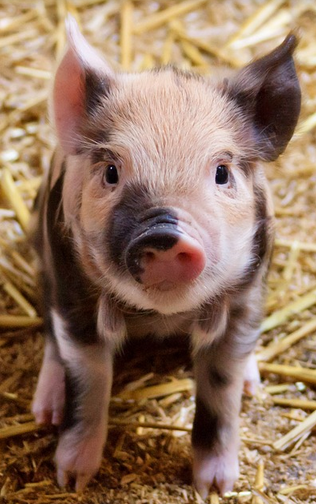

Voici quelques arguments pour continuer à mettre des animaux dans ton assiette sans te poser trop de questions:
Parce que tu tiens trop à ton confort personnel :
* Le plaisir à court terme: la viande, c’est bon !
* Tu as la flemme de cuisiner donc tu as peur d’avoir moins de saveurs dans tes plats.
* Tu as des avantages financiers sur le marché de l’exploitation animale.
* Tu as la flemme de te renseigner sur la diététique ou de chercher des alternatives aux produits issus de l’exploitation animale. Bref, tu n’as pas envie de te compliquer la vie pour manger.
* Tu n’aimes pas le changement.
* L’éthique ne t’intéresse qu’à moitié.
* Tu considères que les intérêts de ta propre espèce, aussi futiles soient-ils, prévalent sur les intérêts (même vitaux) des autres espèces.
* Tu crois en une divinité qui te permet d’asservir et de tuer des individus d’espèces non-humaines pour te régaler.
* Tu as peur que ton entourage social ne te renie. Tu as peur de t’exclure des autres, lors des fêtes de famille par exemple.
Parce que tu fais des erreurs de logique (lien wiki sur le raisonnement fallacieux):
* Dans le magasin, l’animal est déja mort, donc tu considères que ton comportement ne change rien au sort des animaux.
* Tu préfères t’occuper des êtres humains, donc tu dois continer à manger de la viande.
* Tu crois que c’est satisfaire les vaches que de prendre leur lait (info).
* Parce que l’être humain a toujours mangé de la viande.
* Parce que la majorité des êtres humains mangent de la viande.
* Parce que les gens que tu admires mangent des animaux.
* Parce que les végétariens et végans sont des gens bizarres et extrémistes.
* Parce qu’en tant qu’omnivore, tu peux manger des animaux donc tu considères que cela te donne le droit légitime de les exploiter à ce dessein.
Parce que tu refuses de voir une réalité qui te déplaît:
* Tu refuses de croire que l’être humain peut vivre en pleine santé sans viande.
* Tu ne veux pas savoir que d’être végétarien, végétalien ou vegan est un excellent moyen de lutter contre le réchauffement climatique (qui a fait, fait et va faire très mal aux espèces humaines et non-humaines).
* Tu ne veux pas savoir que l’exploitation animale à des fins commerciales est toujours nuisible aux animaux.
* Tu ne veux pas savoir que les animaux (y compris les poissons et les animaux dit “de la ferme”) sont capables de ressentir plaisir et douleur, de désirer, de s’ennuyer, de résoudre des énigmes, de faire leur propre choix, etc… Qu’ils ont (dans un environnement naturel) une vie sociale riche et intelligente. Qu’ils savent coopérer et aider. Plus d’info ici.

Et çà, c’est cadeau, pour rigoler un peu:
* Il faut dépenser 21 kilogrammes de proteines végétales pour produire 1 kilogramme de protéines animales (veau) (rapport à 8kg/1kg pour le porc). Mais tu n’aimes pas les maths, donc tu t’obstines à croire que l’exploitation animale est nécessaire pour résoudre les problèmes de faim dans le monde.
* Parce que tu es le premier être humain carnivore donc si tu n’as pas ton BBQ ce weekend, tu meurs.
* Parce que tu veux continuer à insulter les végans et végétariens légitimement.
* Parce que tu souhaites explicitement assujétir les espèces non-humaines pour leur prouver que c’est nous les plus forts. D’ailleurs, si une espèce extra-terrestre (aussi intelligente ou sensible soit-elle) débarque un jour sur Terre, si sa chair est tendre, tu t’en feras aussi des tartares !
* Parce que ton beau-père est végan et tu détestes ton beau-père.
* Parce que tu es un homme, un vrai, et rien n’est plus viril que de manger la côte saignante d’une vache. (Ce n'est presque pas une blague, c'est une véritable justification pour de nombreuses personnes => Rothgerber, 2013: "les vrais hommes mangent de la viande!")
* Tu crois que sans protéine animale, les hommes auront des problèmes d’érection ou ne pourront pas être musclés.
* Parce que tu ne veux pas ressembler à un gorille (les gorilles sont principalement végétariens)
* Parce que la pub de Herta est trop cool (“eh! Mais t’avais dit qu’on mangait des knackis”), qu’avec “Fleurimichon, c’est le début du bonheur”, et qu’enrichir des multinationales richissimes, ça fait plaisir.
* Tu veux garder un contact direct, privilégié et vraiment très intime avec les animaux.
“La cruauté n’est reconnue en tant que telle que lorsqu’elle n’est plus rentable” Ruth Harrison
Epilogue : si j’utilise un peu d’ironie dans cette réponse, n’y vois pas de jugement de valeur en ta personne. Je cherche simplement à discréditer l’argumentaire spéciste et à susciter le questionnement. Car dans les faits, boycotter la viande, c’est refuser une participation active à de la cruauté, à de l’injustice, à de la souffrance gratuite, mais aussi à la destruction de l’habitat de nombreuses espèces non-humaines, à la destruction de notre environnement et de celui de nos enfants. Alors réveillons-nous et boycottons la viande ! Boycottons l’exploitation animale !
Plus d’info:
L'impact de la viande sur les humains, les animaux et l'environnement